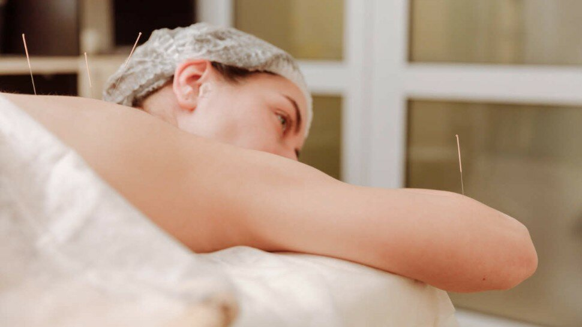
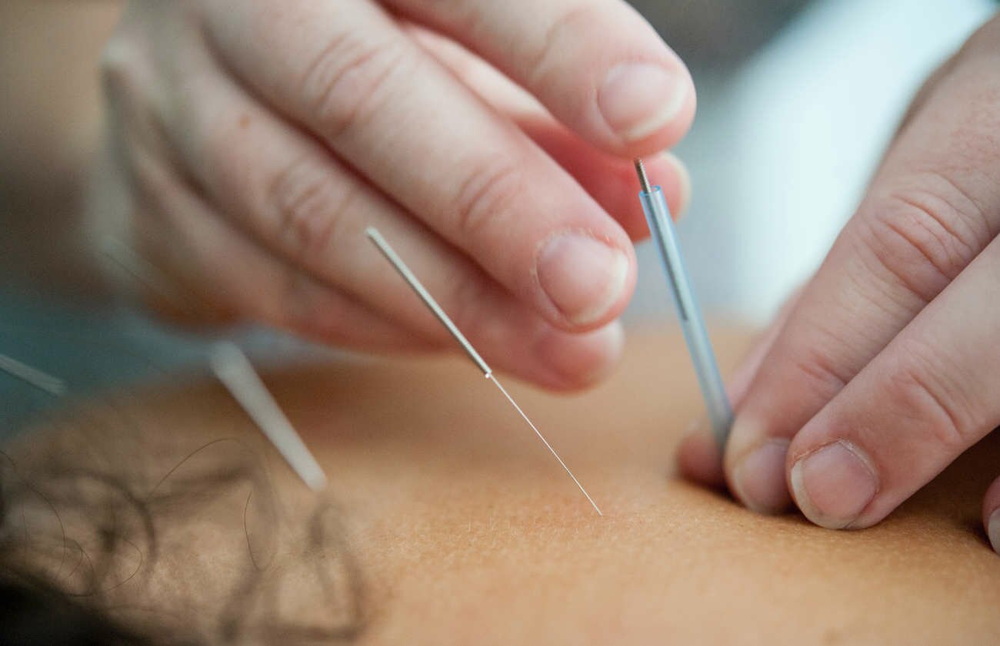

Acupuncture : quels sont ses bienfaits sur la santé ?

L'acupuncture, du latin médical « acupunctura » (formé de acus, « aiguille » et punctura, « piqûre ») est une pratique dans les médecines douces, dont les origines historiques remontent à plusieurs siècles et puisent ses sources dans les traditions et doctrines de la médecine traditionnelle chinoise (MTC). L'acupuncture est généralement considérée comme originaire de Chine, et le premier document - "Huangdi Nei Jing" ou "Classique interne de l'empereur Jaune" - qui décrit cette pratique date d'environ trois siècles avant J.-C., bien que le moment exact où l'on peut dire que l'acupuncture a commencé en Chine manque encore de preuves archéologiques et historiques.
La médecine chinoise a été mentionnée pour la première fois dans la littérature occidentale dès le XIIIe siècle après J.-C. dans les récits de voyage du missionnaire franciscain Guillaume de Rubrouck, mais le monde occidental a pris conscience de l'acupuncture uniquement quelques siècles plus tard. De plus, en dépit des idées et des pratiques antérieures, l'acupuncture moderne, qui comprend de nouvelles variantes telles que l'électroacupuncture, n'a peut-être jamais existé dans la Chine traditionnelle sous la forme dans laquelle elle est pratiquée de nos jours.
Les théories traditionnelles de l'acupuncture ont été contestées en Occident, mais plusieurs études scientifiques apportent régulièrement de nouvelles preuves sur les véritables effets de l'acupuncture. A ce jour, plusieurs milliers d'études scientifiques ont été publiées sur l'efficacité de l'acupuncture pour des troubles allant de l'épicondylite latérale (aussi appelé "coude du joueur de tennis" ou "Tennis-elbow") au trouble de stress post-traumatique (TSPT). Les preuves suggèrent que l'acupuncture peut traiter efficacement certains symptômes comme les nausées et la douleur, mais généralement pas les causes sous-jacentes de ces symptômes.
L'acupuncture fait partie des différentes approches des branches de la médecine traditionnelle chinoise et orientale, comme la moxibustion, le massage tui na ou le shiatsu. Ainsi, elle tire son origine dans la médecine traditionnelle chinoise et permet de rétablir l'équilibre énergétique (le « Qi ») dans l'organisme. Les concepts de canaux (méridiens ou conduits) dans lesquels le Qi (énergie vitale ou force vitale) circule sont bien établis. Globalement, l'acupuncture est une technique thérapeutique qui vise à traiter le corps et l'esprit d'un patient afin de rétablir son équilibre et son bien-être, grâce à la stimulation de plusieurs points spécifiques à l'extérieur du corps. De la sorte, l'acupuncteur insère des aiguilles dans des points précis à la surface de la peau pour rétablir la circulation du Qi.

Sommaire
- Quels sont les bienfaits de l'acupuncture ?
- Qu'est-ce que l'acupuncture peut soigner ?
- L'acupuncture est-elle efficace ? - Vidéo
- En France, le médecin est le seul autorisé à exercer cette pratique
- Quel est le point de vigilance ?
- L'acupuncture sans aiguilles
- Quand aller voir un médecin acupuncteur ?
- Que fait un acupuncteur pendant une séance ?
- Quel prix et remboursement d'une séance d'acupuncture ?
- Quelle formation suivre pour devenir acupuncteur ?
- Pour quelles indications thérapeutiques l'acupuncture est-elle proposée ?
- L'acupuncture et la grossesse
- L'acupuncture pendant la grossesse - La Maison des maternelles - Vidéo
- L'acupuncture en obstétrique hors grossesse
- Peut-on maigrir grâce à l'acupuncture ?
- L'acupuncture a-t-elle une action sur la diminution du stress et la dépression ?
- L'acupuncture permet-elle d'arrêter de fumer ?
- Arrêter de fumer avec l'acupuncture - Allô Docteurs - Vidéo
- Acupuncture et traitement des symptômes associés au syndrome du canal carpien
- Interview du Docteur Hector Ruiz
- Sources
Quels sont les bienfaits de l'acupuncture ?

La médecine classique occidentale (médicaments et chirurgie utilisés dans les systèmes de médecine conventionnels pour traiter ou prévenir les maladies) est souvent coûteuse, et peut provoquer des effets secondaires et des dommages.
En effet, la médecine allopathique conventionnelle n'est pas toujours le traitement optimal pour les affections à long terme telles que la douleur chronique. De la sorte, là où les traitements conventionnels n'ont pas été couronnés de succès, l'acupuncture ainsi que d'autres médecines traditionnelles et complémentaires ont le potentiel de jouer un rôle dans la prise en charge optimale des patients.
Largement utilisée dans le monde depuis les années soixante-dix, dans certains pays l'acupuncture est couverte par une assurance maladie et des réglementations établies. Compte tenu de l'utilisation généralisée de l'acupuncture comme thérapie complémentaire (soin de support) aux côtés de la médecine conventionnelle, il y a eu une augmentation de l'intérêt mondial pour la recherche et des bonnes pratiques au cours des dernières décennies. L'objectif visé est d'étudier l'innocuité et l'efficacité de l'acupuncture en plus d'autres interventions de la médecine traditionnelle chinoise (MTC). En Chine et certains autres pays d'Asie, l'acupuncture est un élément notable des programmes de recherche national et reçoit un financement majeur pour la recherche.
L'acupuncture est de plus en plus utilisée dans les domaines de la santé et du bien-être. Et pour cause, elle renferme de nombreux bienfaits, qui sont régulièrement documentés par des recherches scientifiques. A commencer par l'analgésie, elle permet une diminution de la douleur à court et long terme. Elle a aussi un effet relaxant par son intervention dans la modulation cérébrale permettant une diminution du stress, de l'anxiété et de l'insomnie.
Elle permet une harmonisation dans l'équilibre du corps en jouant sur l'homéostasie des systèmes nerveux autonome (système parasympathique et sympathique) et endocriniens (hormones).
Enfin, elle a un effet modulateur par son action sur le système immunitaire et réparateur par son action sur la réparation tissulaire et une meilleure circulation. [1]

Qu'est-ce que l'acupuncture peut soigner ?
Quand aller voir un médecin acupuncteur ?

Quel prix et remboursement d'une séance d'acupuncture ?
Depuis peu, les séances d'acupuncture peuvent être remboursées par l'Assurance maladie dans le cadre d'un exercice conventionné et d'un parcours de soins coordonné. Cela signifie que le médecin traitant doit impérativement le prescrire. Ainsi, la séance d'acupuncture sera remboursée à hauteur de 70% par la sécurité sociale.
De plus, selon le contrat mutuel souscrit, il peut y avoir un remboursement partiel ou total. Les séances d'acupuncture coutent en moyenne entre 35 et 75 euros selon les praticiens. [11]
L'acupuncture en obstétrique hors grossesse
Interview du Docteur Hector Ruiz
Sources
- Association des acupuncteurs du Québec. https://www.acupuncture-quebec.com/
- Acupuncture. Conseil de l'Ordre des Médecins. 2018. https://conseil82.ordre.medecin.fr/
- L'acupuncture. Fiches d’information. Les pratiques de soins non conventionnelles. Médecines complémentaires / alternatives / naturelles. 2021. https://solidarites-sante.gouv.fr/
- Acupuncture. Par Denise Millstine, MD, Mayo Clinic. 2019. https://www.msdmanuals.com/
- « L’acupuncture n’est pas un placebo ». 2018. https://www.rose-up.fr/
- Different Acupuncture Therapies for Allergic Rhinitis: Overview of Systematic Reviews and Network Meta-Analysis: https://pubmed.ncbi.nlm.nih.gov/32382307/
- Effectiveness and Safety of Acupuncture for Migraine: An Overview of Systematic Reviews: https://pubmed.ncbi.nlm.nih.gov/32269669/
- Fascia Mobility, Proprioception, and Myofascial Pain by Helene M. Langevin National Center for Complementary and Integrative Health, National Institutes of Health, 31 Center Drive, Suite 2B11, Bethesda, MD 20892, USA. Life 2021, 11(7), 668; https://doi.org/10.3390/life11070668, https://www.mdpi.com/2075-1729/11/7/668/htm
- Les alliés cachés de notre organisme. Les fascias. ARTE. https://www.youtube.com/watch?v=2lKDcNvQ9FQ
- Wilke J, Schleip R, Klingler W, Stecco C. The Lumbodorsal Fascia as a Potential Source of Low Back Pain: A Narrative Review. Biomed Res Int. 2017;2017:5349620. doi: 10.1155/2017/5349620. Epub 2017 May 11. PMID: 28584816; PMCID: PMC5444000. https://pubmed.ncbi.nlm.nih.gov/28584816/
- Acupuncture : comment être remboursé ? https://www.groupama.fr/
- Fiche Métier : Acupuncteur. Comment devenir Acupuncteur ? Retrouvez ici les missions, formation nécessaire, rémunération de cette profession. http://etudiant.aujourdhui.fr/
- Guven PG, Cayir Y, Borekci B. Effectiveness of acupuncture on pregnancy success rates for women undergoing in vitro fertilization: A randomized controlled trial. Taiwan J Obstet Gynecol. 2020 Mar;59(2):282-286. doi: 10.1016/j.tjog.2020.01.018. PMID: 32127151. https://pubmed.ncbi.nlm.nih.gov/32127151/
- Acupuncture pour les douleurs menstruelles. https://www.cochrane.org/
- Xu Y, Zhao W, Li T, Zhao Y, Bu H, Song S. Effects of acupuncture for the treatment of endometriosis-related pain: A systematic review and meta-analysis. PLoS One. 2017 Oct 27;12(10):e0186616. doi: 10.1371/journal.pone.0186616. PMID: 29077705; PMCID: PMC5659600. https://pubmed.ncbi.nlm.nih.gov/29077705/
- Chien TJ, Hsu CH, Liu CY, Fang CJ. Effect of acupuncture on hot flush and menopause symptoms in breast cancer- A systematic review and meta-analysis. PLoS One. 2017 Aug 22;12(8):e0180918. doi: 10.1371/journal.pone.0180918. PMID: 28829776; PMCID: PMC5568723. https://pubmed.ncbi.nlm.nih.gov/28829776/
- Obesity Treatment/Alternative Medicine. Effect of acupuncture and intervention types on weight loss: a systematic review and meta-analysis. S.-Y. Kim, I.-S. Shin, Y.-J. Park. 2018. https://doi.org/10.1111/obr.12747, https://onlinelibrary.wiley.com/
- Goyatá SL, Avelino CC, Santos SV, Souza Junior DI, Gurgel MD, Terra Fde S. Effects from acupuncture in treating anxiety: integrative review. Rev Bras Enferm. 2016 Jun;69(3):602-9. English, Portuguese. doi: 10.1590/0034-7167.2016690325i. PMID: 27355312. https://pubmed.ncbi.nlm.nih.gov/27355312/
- Fernandez-Chinguel JE, Goicochea-Lugo S, Villarreal-Zegarra D, Taype-Rondan A, Zafra-Tanaka JH. Acupuncture for major depressive disorder: A review of the recommendations stated at clinical practice guidelines. Complement Ther Med. 2020 Mar;49:102321. doi: 10.1016/j.ctim.2020.102321. Epub 2020 Jan 24. PMID: 32147048. https://pubmed.ncbi.nlm.nih.gov/32147048/
- Lhommeau N, Huchet A, Castera P. Acupuncture et arrêt de la consommation tabagique, une revue de la littérature [Acupuncture and smoking cessation, a review of the literature]. Rev Mal Respir. 2020 Jun. 37(6):474-478. French. doi: 10.1016/j.rmr.2020.02.016. Epub 2020 May 13. PMID: 32416946. https://pubmed.ncbi.nlm.nih.gov/32416946/
- Choi GH, Wieland LS, Lee H, Sim H, Lee MS, Shin BC. Acupuncture and related interventions for the treatment of symptoms associated with carpal tunnel syndrome. Cochrane Database Syst Rev. 2018 Dec 2;12(12):CD011215. doi: 10.1002/14651858.CD011215.pub2. PMID: 30521680; PMCID: PMC6361189. https://pubmed.ncbi.nlm.nih.gov/30521680/
Ressources
- Le Diagnostic en médecine chinoise – Broché – Illustré, 26 août 2020 de Giovanni Maciocia. Éditeur : Elsevier Masson.
- Anatomie des points d'acupuncture – Poche – Illustré, 23 septembre 2016, de Chris Jarmey, Ilaira Bouratinos. Éditeur : Éditions de l'Éveil.
- Atlas d'acupuncture pratique et aide-mémoire du praticien – Relié – Illustré, 8 janvier 2016 de Alain Dubois. Éditeur : Les éditions Trédaniel.
- Guide d'acupuncture : localisation des points et techniques d'insertion – Broché – Illustré, 28 novembre 2018 de Claudia Focks. Éditeur : Elsevier Masson.
- Précis d'acuponcture chinoise – Relié – 21 décembre 1999 de l'Académie de médecine traditionnelle chinoise. Éditeur : Dangles.
- L'acupuncture sans aiguille – Broché – 20 février 2013 de Marie-Claire Lapare. Éditeur : Chariot d'or.
- Acupression pour les débutants - Libérer et équilibrer son flux d'énergie - collection Appuyez ici - Broché – Illustré, 21 mars 2019 de Bob Doto. Éditeur : First.
- Livre blanc de l'auriculothérapie en 2020 - Broché – Livre grand format, 9 juillet 2020, sous la direction d'Yves Rouxeville. Éditeur : Sauramps Médical.